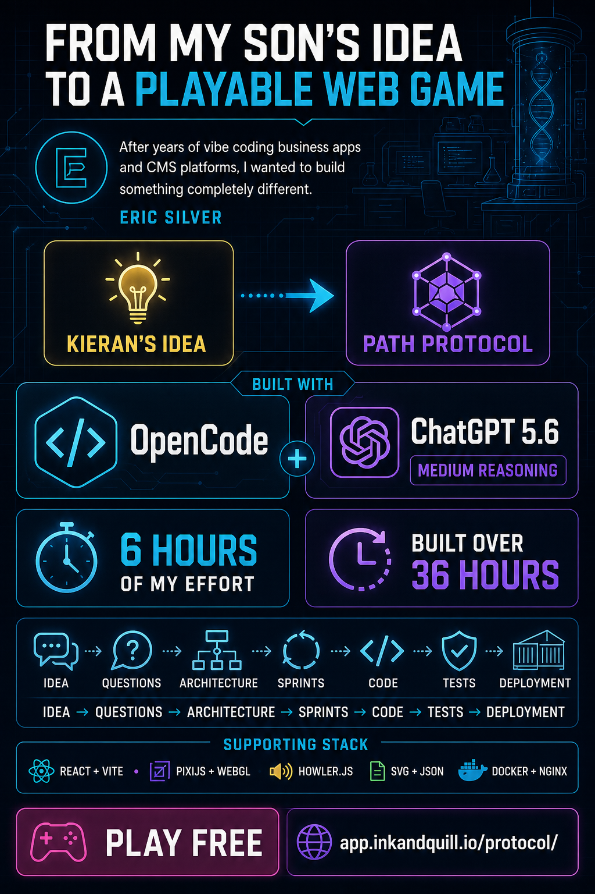

From an idea to a playable web game
Path Protocol
After years of vibe coding business applications and CMS platforms, Eric Silver decided to build something completely different: a browser game inspired by an idea from his son, Kieran.
6 hours
Hands-on effort
36 hours
Build window
Idea → Questions → Architecture → Sprints → Code → Tests → Deployment
Built with OpenCode and ChatGPT 5.6 with Medium reasoning, supported by React, Vite, PixiJS, WebGL, Howler.js, SVG, JSON, Docker, and Nginx.
